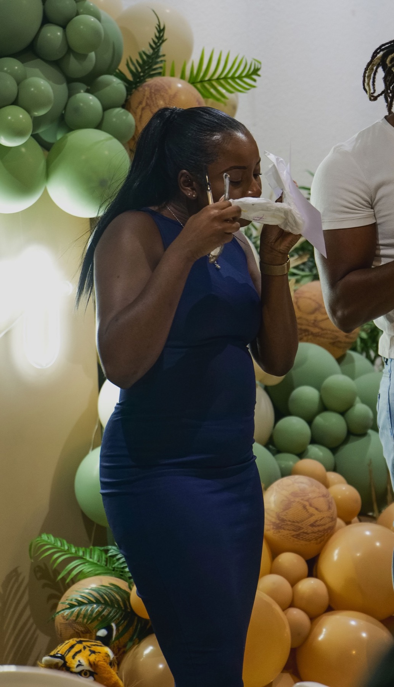
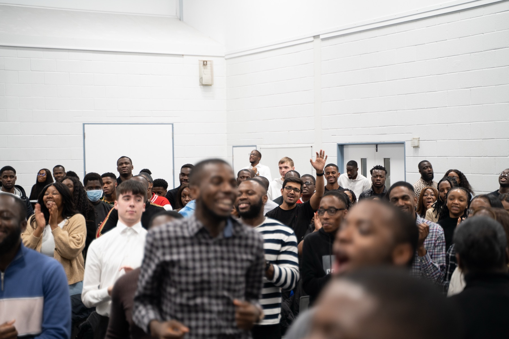
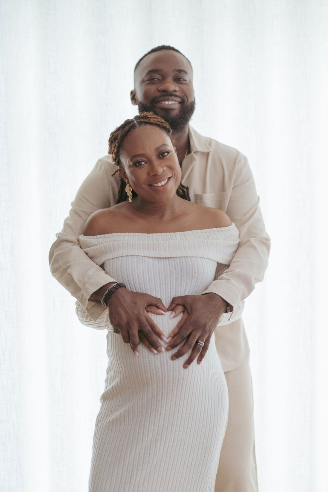
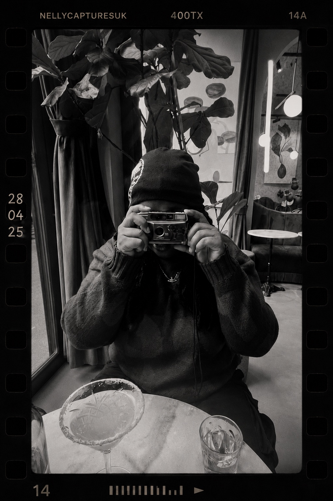

Events
Celebrations, launches, community gatherings and live experiences.
Events · weddings · portraits · stories
For the atmosphere, the people and the moments you did not see happening.
Explore the workFrom packed rooms to quiet portraits, every story is covered with a documentary eye and a clean cinematic finish.



Celebrations, launches, community gatherings and live experiences.
Photography and film shaped around the people and the energy of the day.
Couples, maternity, graduations and personal milestones without stiff posing.
Short-form event films and visual stories made for sharing and remembering.
The approach
Present in the room.
Quiet when it matters.
Ready when it happens.

The creative behind NC Studio
Inspired by film and drawn to genuine moments, I document people and events with a timeless, cinematic approach.
My goal is simple: to preserve how it felt, not just how it looked. The loud moments, the quiet ones and everything that made the room yours.
Tell me what you're planningBookings + availability
Send the date, location and a little about the event. I will come back with the clearest next step.
Start an enquiry